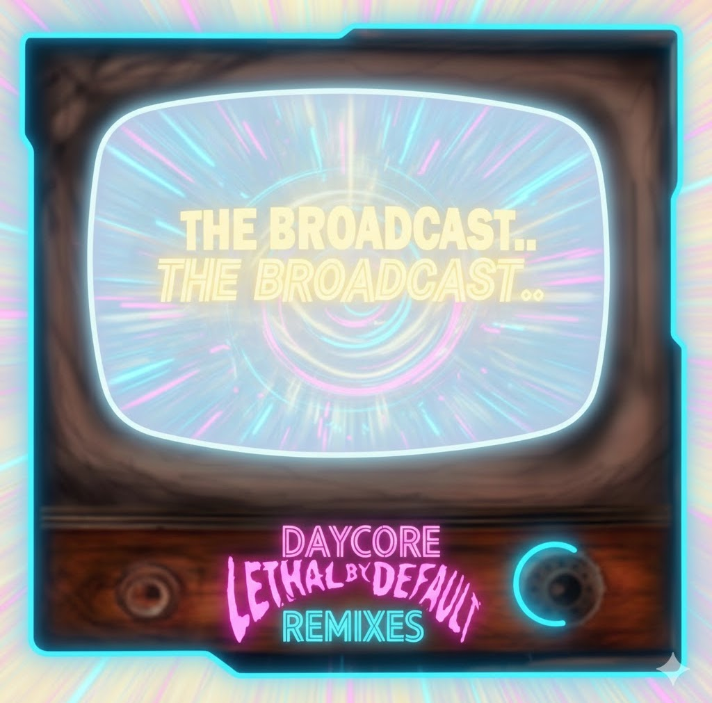
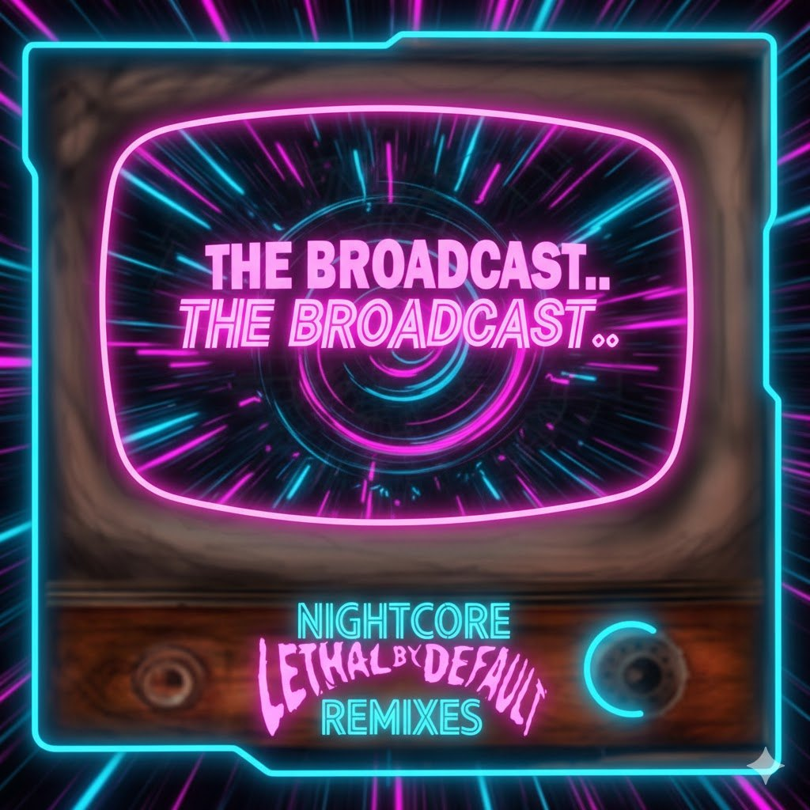

The Broadcast (Day~Night)

Mix Guide
- Daycore Mix: Slows the song down and lowers its pitch for a heavier, darker, and more laid-back vibe.
- Nightcore Mix: Speeds up the song and raises its pitch for a fast, high-energy sound.
The Broadcast (Daycore Remix)
Select a track to play

The Broadcast (Nightcore Remix)
Select a track to play